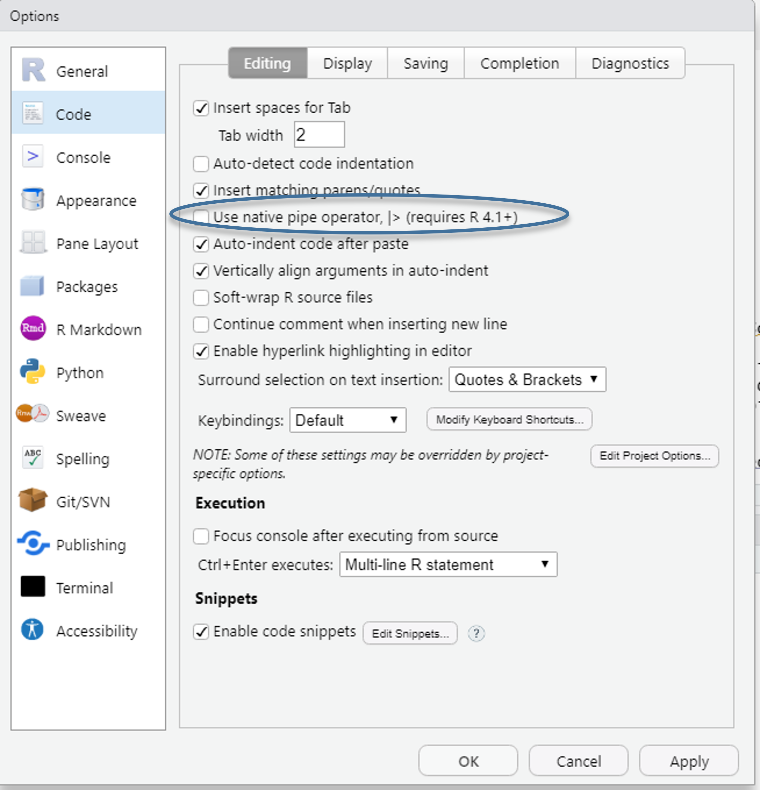
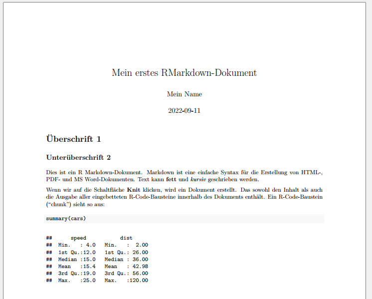

sat_small <- haven::read_dta("./data/BIBBBAuA_2018_suf1.0.dta",n_max = 16) %>%
select(F1450_04,F1450_05,F1450_06) %>%
slice(12:16)
# formula syntax
sat_small %>%
mutate(across(matches("F1450"),~mean(.x)))
# anonymous function short hand
sat_small %>%
mutate(across(matches("F1450"),\(x) mean(x) ))Links & Weiterführendes
%>% vs. |>
In diesem Kurs haben wir die Pipe %>% aus {tidyverse} (streng genommen aus dem Paket {magrittr}) kennen gelernt. Mit dem Update auf R 4.1 wurde in base R ebenfalls eine Pipe |> eingeführt und Hilfeseiten usw. ersetzen langsam, aber sicher %>% durch |>. Für (nahezu) alle Anwendungen, die wir kennengelernt haben, verhalten sich beide Pipes identisch - und nachdem am IAB R teilweise noch alte R-Versionen installiert sind, haben wir uns an ‘alte Variante’ gehalten. Letztlich spricht aber nichts dagegen, nach einem Update auf |> umzusteigen - oder einfach bei %>% zu bleiben.

Unter anderem steht hier mehr zu den Unterschieden zwischen beiden Pipes. Außerdem bietet dieser Blogbeitrag einen guten Überblick zu den Fallstricken beim Umstieg von %>% auf |>.
Anonyme Funktionen: .x vs. /(x)
Mit R 4.1.0 wurde in base R eine neue ‘anonymous function short hand’ eingeführt, welche die ‘formula syntax’ Schreibweise ~mean(.x) ablöst, die wir in Kapitel 6 kennen gelernt haben. In der neuen base R wäre das \(x) mean(x) geschrieben.
Aus der {purrr} release notes für Version 1.0.0 (Dezember 2022): We believe that it’s better to use these new base tools because they work everywhere: the base pipe doesn’t require that you load magrittr and the new function shorthand works everywhere, not just in purrr functions. Additionally, being able to specify the argument name for the anonymous function can often lead to clearer code.
Dementsprechend würde die Anwendung in across() wie folgt aussehen:
In diesem Skript habe ich auf die bisherige ‘formula syntax’ Schreibweise zurück gegriffen, da aktuell noch die meisten Hilfeseite mit dieser Syntax arbeiten.
Einführungen in R
Eine Sammlung von Lehrskripten und Unterlagen aus verschiedenen Kontexten zum selbst weiter lernen:
R for Data Science das Standardwerk für Datenanalysen mit {tidyverse} - sehr intuitive Einführung, Fokus auf Data Science
Problemorientiere Einführungen in spezifische Anwendungen “do more with R”
Ten simple rules for teaching yourself R
Moderne Datenanalyse mit R: Deutschsprachige Einführung in {tidyverse}
R for the Rest of Us bietet viele Tutorials und freie Kurse an, unter anderem auch viele YouTube Videos.
Stata 2 R richtet sich alle Anwender*innen von Stata, die auf R umsteigen möchten. Allerdings wird hier anstelle des {tidyverse} das Paket {data.table} für die Datenaufbereitung gezeigt. {data.table} ist auf der einen Seite sehr schnell, jedoch von der Syntaxlogik her etwas umständlicher als das {tidyverse}. Für alle, die mit sehr großen Datensätzen arbeiten lohnt es sich aber, {data.table} auszuprobieren.
RMarkdown
{rmarkdown} ermöglich es, formatierte Textelemente mit Markdown und R code bzw. Output zu kombinieren. Anders als ein R Script enthält ein RMarkdown-Dokument nicht nur Befehle, sondern auch Text - welcher mit Hilfe von Markdown-Befehlen formatiert werden kann. So können Grafiken, Tabellen, usw. direkt und zeitgleich mit dem Begleittext erstellt werden. Mit R Markdown können wir HTML, PDF, Word Dokumente, PowerPoint und HTML Präsentationen, Webseiten und Bücher erstellen. Diese gesamte Webseite wurde mit {R Markdown} bzw. dem verwandten Paket {Quarto} erstellt.
Die Hilfeseiten und Dokumentation für R Markdown ist extrem umfangreich und auch die Tutorials und Cheatsheets sind hervorragend. Daher hier nur eine kleiner Überblick.
Markdown Syntax
Ein RMarkdown-Dokument sieht in seiner Grundform ungefähr so aus:
---
title: "Mein erstes RMarkdown-Dokument"
author: "Mein Name"
date: "2022-09-11"
output: pdf_document
---
# Überschrift 1
## Unterüberschrift 2
Dies ist ein R Markdown-Dokument.
Markdown ist eine einfache Syntax für die Erstellung von HTML-, PDF- und MS Word-Dokumenten.
Text kann **fett** und *kursiv* geschrieben werden.
Wenn wir auf die Schaltfläche **Knit** klicken, wird ein Dokument erstellt.
Das sowohl den Inhalt als auch die Ausgabe aller eingebetteten R-Code-Bausteine innerhalb des Dokuments enthält.
Ein R-Code-Baustein ("chunk") sieht so aus:
```{r cars}
# hier kommt der R Code hin
summary(mtcars$qsec)
```
Beispiel
Paper zu einem Beispieldatensatz, komplett in R Markdown geschrieben
Cheatsheets
Eine Sammlung an Cheatsheets für eine breite Palette an Anwendungen gibt es hier.
{ggplot2}
Eine große Stärke von ggplot2 sind die zahlreichen Erweiterungen, welche beispielsweise ermöglichen
- mehrere Grafiken zu kombinieren mit
{patchwork} - Karten zu erstellen mit sf, weitere Link
- fortgeschrittene Textformatierungen zu verwenden mit
{ggtext} - Grafiken als Animation zu erstellen
{gganimate}- eine Einführung oder hier - Logos in in
{ggplot2}einfügen mit{ggpath}
Eine Übersicht zu Erweiterungspakteten für {ggplot2} findet sich hier
Auch The R Graph Gallery bietet eine hervorragende Übersicht zu Darstellungsmöglichkeiten mit Syntaxbeispielen für {ggplot2}.
Fortgeschrittene Anwendung von lapply()/map() mit selbstgeschriebenen Funktionen
- Umfangreiche Einführung in loops mit
map()und weiteren Funktionen aus{purrr}Hendrik van Broekhuizen - Modellserien: Blog von Tim Tiefenbach zu eleganten Möglichkeiten
regex
Für die Arbeit mit Textvariablen sind regular expressions (regex) eine große Hilfe. Damit lassen sich beispielsweise Textabschnitte nach bestimmten Zeichenfolgen durchsuchen, diese ersetzen usw. Der Blog von Joshua C. Fjelstul ist ein guter Einstieg. Darüber hinaus gibt es ein hilfreiches Cheatsheet zu regex in R und das regex -Paket {stringr}
Weiteres
{easystats} bietet eine Sammlung von Paketen, welche statische Auswertungen erleichtern und vereinheitlichen. Gleichzeitig geht diese Vereinheitlichung aber mit einer beschränkteren Flexibilität einher - das ist Geschmackssache und kommt auf den Anwendungsfall an. Wir haben aus dem easystats-Universum unter anderem {performance} und {effectsize} kennengelernt.
Ereigniszeitmodelle / Event History Modellung / Survival Analysis